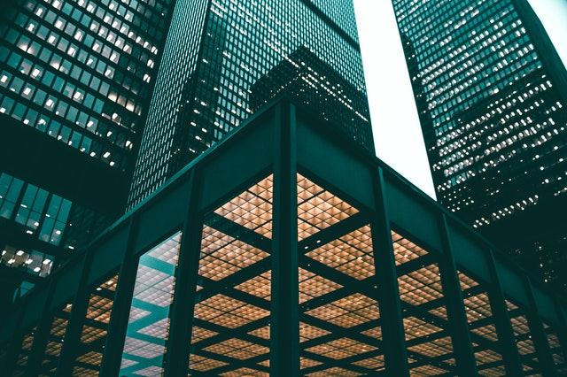
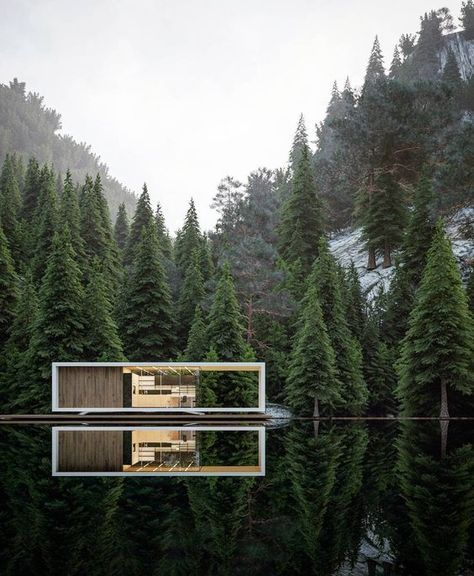

The possiblities are endless

While the majority of projects completed to date have been throughout South Africa, we are also active throughout Africa, particularly Western Africa, which is serviced through our branch office in Lagos, Nigeria. LYT Architecture combines the former TPS.P Architects and Facets Interiors into a single entity, offering over 50 years of combined professional practice and expertise. This allows us to offer the widest range of architectural and interior design services to a broad spectrum of clients.

Hofman Architects is a dynamic, award-winning, architecture studio based in Waterkloof, Pretoria. We are passionate and committed to our clients’ vision and a sustainable built environment. Since 1994 we encourage your ideas to inspire design and combine this with our technical expertise to prepare documentation for the delivery of a successful end result. Our full architectural service covers a wide range of projects from start to finish. We also offer partial services if required. At Hofman Architects we value relationships and quality.
© 2021 · Arki-Q. All rights reserved.